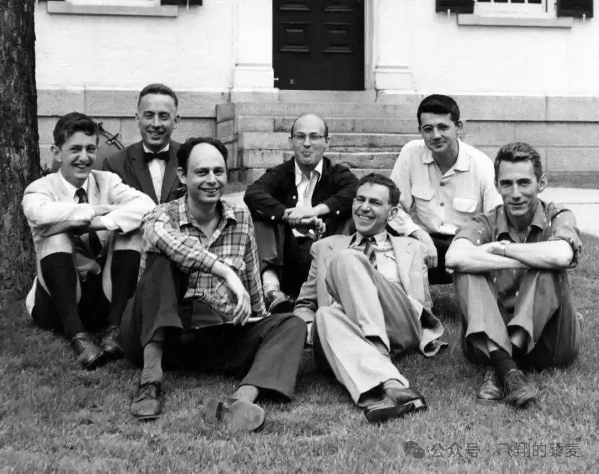
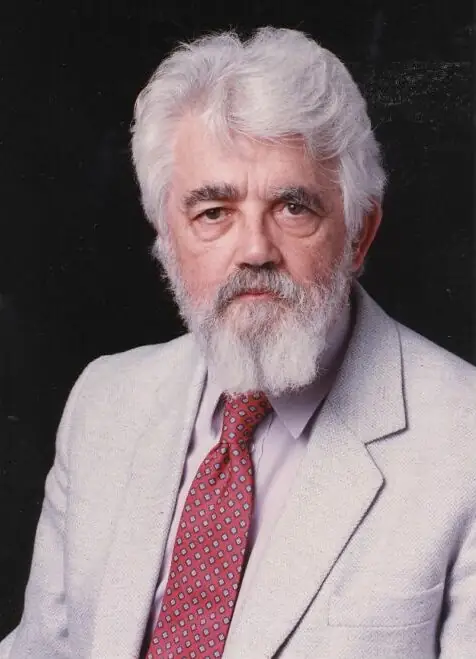

达特茅斯会议
AI 正式启航
一个改变世界的提案
1955年，四位年轻的科学家向洛克菲勒基金会提交了一份前所未有的研究提案——
约翰·麦卡锡（达特茅斯大学数学系助理教授）、马文·明斯基（哈佛大学初级研究员）、 克劳德·香农（贝尔实验室）、纳撒尼尔·罗切斯特（IBM）联名向洛克菲勒基金会提交了 《关于举办达特茅斯人工智能夏季研讨会的提议》。提案中写道：
1950年代中期，多个领域同时出现了突破性进展：图灵提出了"机器能思考吗"的哲学命题（1950）； 香农创立了信息论（1948），证明了所有信息都可以用0和1编码； McCulloch 和 Pitts提出了数学神经元模型（1943）； 冯·诺依曼架构让通用计算机成为现实（1945）； 晶体管的发明正在引发半导体革命（1947）。 这些突破汇聚在一起，让一小群科学家隐约感觉到：用机器模拟智能，或许真的可行。
麦卡锡后来回忆，他的核心想法是：把"智能"这个模糊概念变成一个可以精确研究的科学问题。 他提议用一个暑假的时间，召集10位最聪明的头脑，在新罕布什尔州达特茅斯学院的校园中闭门研讨， 看看能不能取得"重大进展"。这个目标在今天看来近乎傲慢——但正是这种傲慢，点燃了一个时代。
达特茅斯会议最著名的合影。但照片中的人远不止四位发起人——那个夏天， 一批将塑造未来半个世纪AI走向的头脑汇聚在了新罕布什尔州的校园里。

前排（从左）：Simon · Shannon · Rochester
注：还有 More、Rosenblatt 等人也参与了会议的不同阶段 · 鼠标悬浮照片可查看人物介绍

索洛蒙诺夫提出了归纳推理的概率框架，开创了算法信息论的先河；
罗森布拉特带来了感知机的早期构想，为连接主义埋下了种子；
塞尔弗里奇展示了泛魔（Pandemonium）模式识别模型——一种并行处理的全新范式。 — 达特茅斯会议的学术遗产
达特茅斯提案 · 七个议题
从七条议题到参天大树 — 每一个议题都在此后70年里生长为独立的学科分支
1956年的这个夏天，七位科学家在一个小镇上种下了人工智能的种子。
从那时起，AI 经历了数次寒冬与春天，直到今天深刻改变着世界。